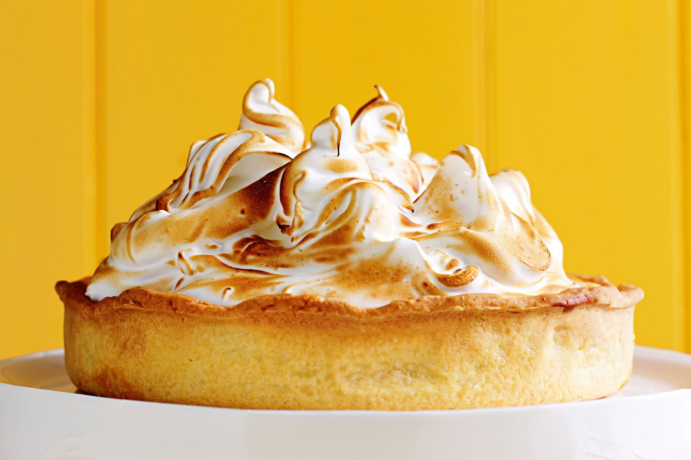

Lemon Meringue Pie

Ingredients
For the crust
- 1½ cups graham cracker crumbs, from about 12 whole crackers
- ⅓ cup sugar
- ¼ cup (4 tablespoons) unsalted butter, melted
For the filling
- 4 large egg yolks (reserve the whites for the meringue)
- 1 (14-oz) can Eagle sweetened condensed milk (see note)
- 1 teaspoon packed finely grated lemon zest, from 1 lemon
- ½ cup fresh lemon juice, from about 3 lemons
For the meringue
- 4 large egg whites
- 6 tablespoons sugar
Steps
For the crust
- Preheat the oven to 375°F and set an oven rack in the middle position.
- In a medium bowl, mix together the graham cracker crumbs and sugar. Add the melted butter; stir with a fork first, and then your hands until the mixture is well combined. Using your fingers and the bottom of a clean drinking glass or measuring cup, press the crumbs firmly into the bottom and up the sides of a 9 x 1.5-inch pie pan. The crust should be about ¼ inch thick.
- Bake for about 10 minutes, until just slightly browned. Let the crust sit on a wire rack while you prepared the rest of the pie. Lower the oven temperature to 325°F.
For the filling
- In a medium bowl, whisk together the egg yolks, sweetened condensed milk, lemon zest, and lemon juice. Pour into the warm crust.
For the meringue
- Beat egg whites in a glass, metal, or ceramic bowl with an electric mixer until foamy.
- Gradually add sugar, continuing to beat until stiff peaks form. Spread meringue over pie filling, sealing the edges at the crust.